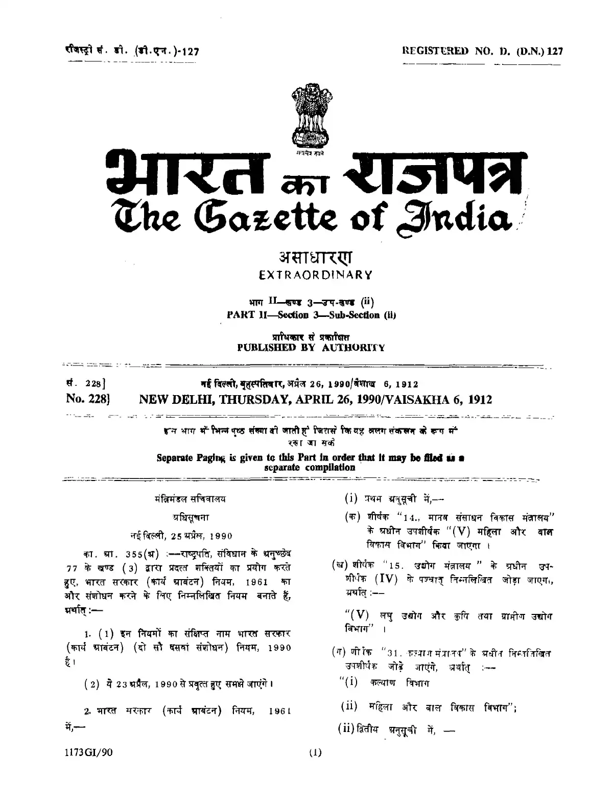
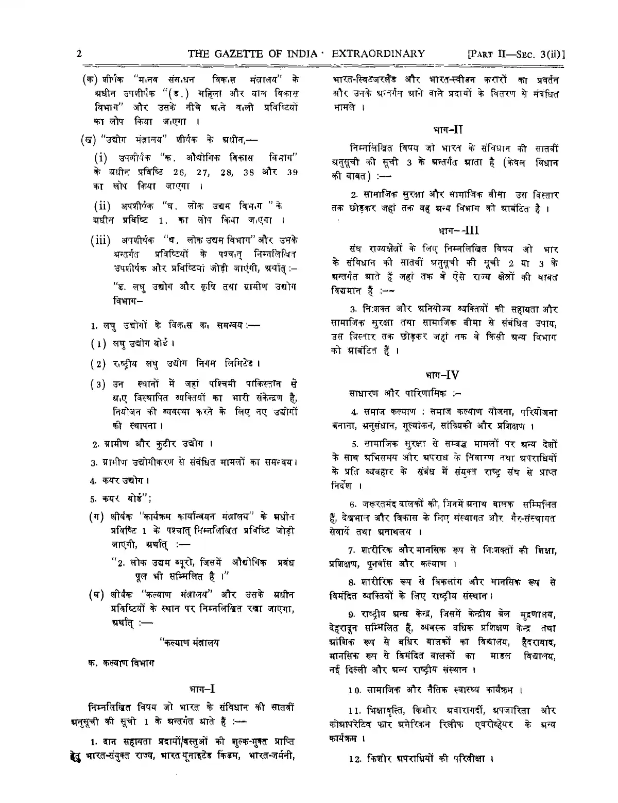
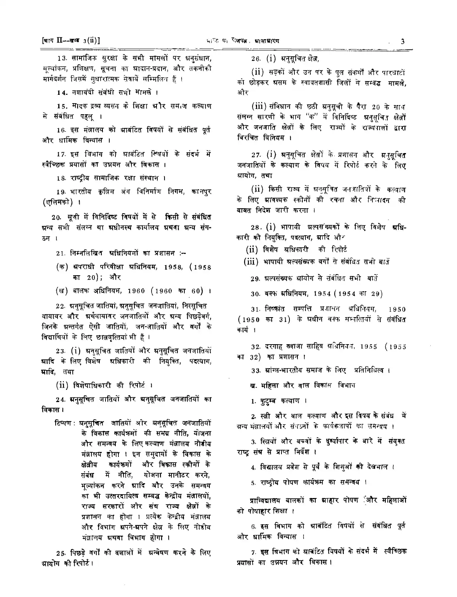
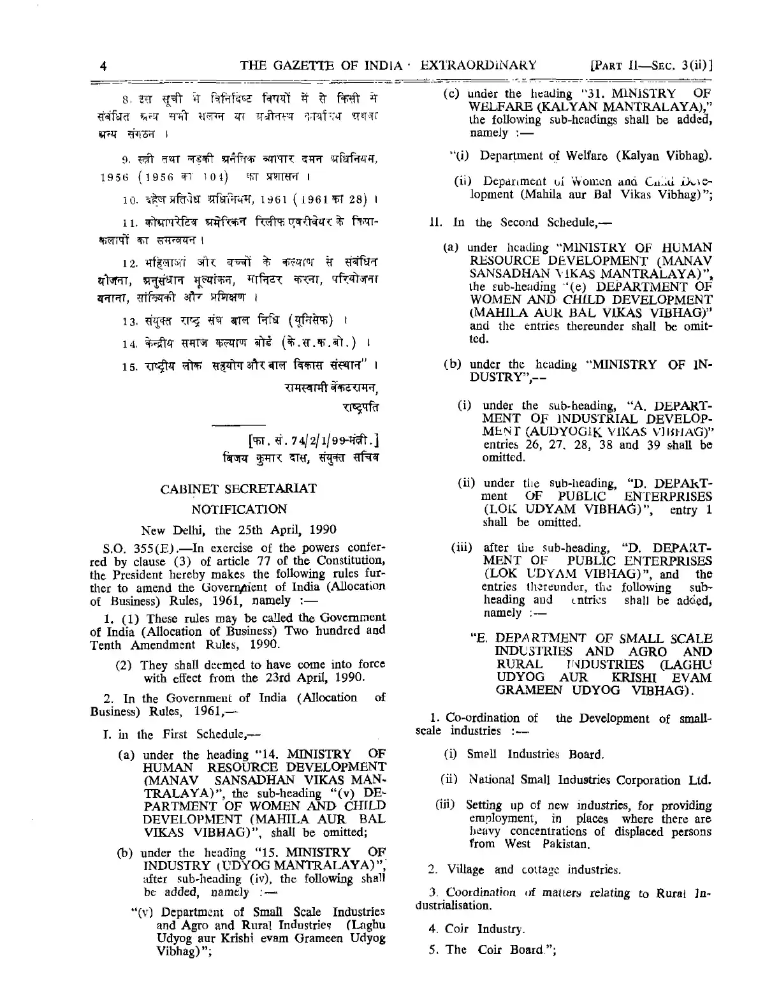
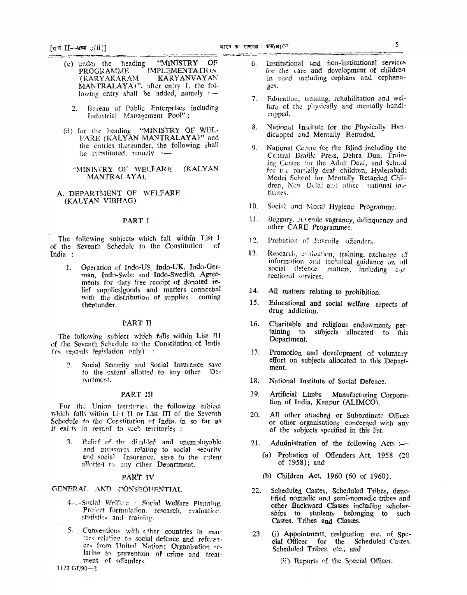
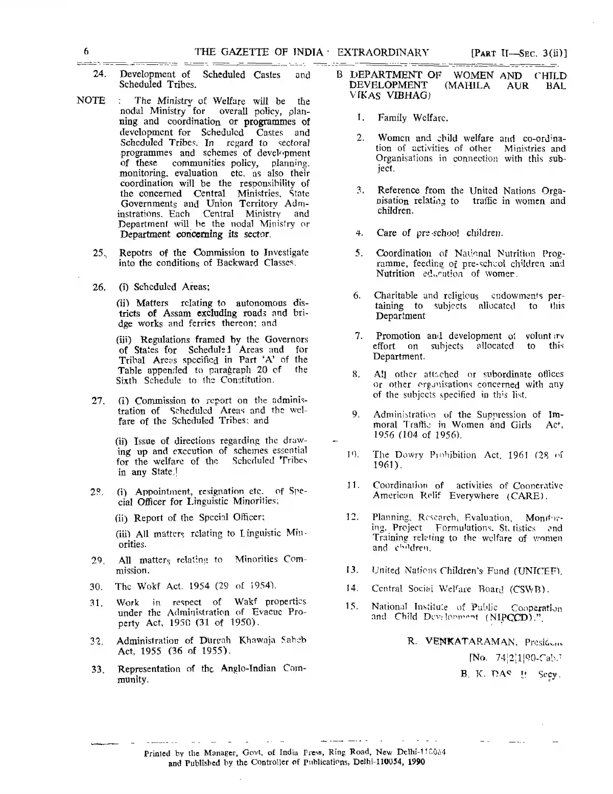

Amendment #210 (S.O. 355(E), 1990)
9 changes: 3 to the First Schedule, 6 to the Second Schedule. 9 applied
What it did to the ministries
- grewMinistry of Welfare grows from 31 to 47 subjects change 3, 9 · histories: Social Justice
The order, page by page
Page 1 of 6

Page 2 of 6

Page 3 of 6

Page 4 of 6

1234567Schedule 1 › MINISTRY OF HUMAN RESOURCE DEVELOPMENT › DE- PARTMENT OF WOMEN AND CHILD DEVELOPMENT
applied at schedule 1 › ministry 12 › department v in the Rules after #210
after Schedule 1 › MINISTRY OF INDUSTRY › (iv)
- v. Department of Small Scale Industries and Agro and Rural Industries
applied at schedule 1 › ministry 13 › department v in the Rules after #210
after Schedule 1 › MINISTRY OF WELFARE
- i. Department of Welfare
- ii. Department of Women and Cuild Dovelopment
applied at schedule 1 › ministry 27 in the Rules after #210
Schedule 2 › MINISTRY OF HUMAN RESOURCE DEVELOPMENT › DEPARTMENT OF WOMEN AND CHILD DEVELOPMENT
applied at schedule 2 › ministry MINISTRY OF HUMAN RESOURCE DEVELOP- MENT › department E in the Rules after #210
states inferred loose
Schedule 2 › MINISTRY OF IN- DUSTRY › DEPARt- MENT OF INDUSTRIAL DEVELOP- MENT › entry 26; Schedule 2 › MINISTRY OF IN- DUSTRY › DEPARt- MENT OF INDUSTRIAL DEVELOP- MENT › entry 27; Schedule 2 › MINISTRY OF IN- DUSTRY › DEPARt- MENT OF INDUSTRIAL DEVELOP- MENT › entry 28; Schedule 2 › MINISTRY OF IN- DUSTRY › DEPARt- MENT OF INDUSTRIAL DEVELOP- MENT › entry 38; Schedule 2 › MINISTRY OF IN- DUSTRY › DEPARt- MENT OF INDUSTRIAL DEVELOP- MENT › entry 39
applied at schedule 2 › ministry MINISTRY OF INDUSTRY › department A › group_heading IV › entry 26 in the Rules after #210
Schedule 2 › MINISTRY OF IN- DUSTRY › DEPAKT- ment OF PUBLIC ENTERPRISES › entry 1
applied at schedule 2 › ministry MINISTRY OF INDUSTRY › department D › entry 1 in the Rules after #210
states inferred loose
after Schedule 2 › MINISTRY OF IN- DUSTRY › DEPART- MENT OF PUBLIC ENTERPRISES
- E. DEPARTMENT OF SMALL SCALE INDUSTRIES AND AGRO AND RURAL INDUSTRIES
- 1. Co-ordination of the Development of smallscale industries :- --
- i. Small Industries Board.
- ii. National Small Industries Corporation Ltd.
- iii. Setting up of new industries, for providing employment, in places where there are heavy concentrations of displaced persons from West Pakistan.
- 2. Village and cottage industries.
and 3 more
- 3. Coordination of matters relating to Rural Industrialisation.
- 4. Coir Industry.
- 5. The Coir Board.
applied at schedule 2 › ministry MINISTRY OF INDUSTRY › department E in the Rules after #210
Page 5 of 6

89after Schedule 2 › MINISTRY OF PROGRAMME IMPLEMENTATION › entry 1
- 2. Bureau of Public Enterprises including Industrial Management Pool
applied at schedule 2 › ministry MINISTRY OF PROGRAMME IMPLEMENTA- TION › entry 2 in the Rules after #210
Schedule 2 › MINISTRY OF WEL- FARE
- MINISTRY OF WELFARE (KALYAN MANTRAL AYA).
- A. DEPARTMENT OF WELFARE
- I. PART I
- 1. Operation of Indo-US, Indo-UK, Indo-German, Indo-Swiss and Indo-Swedish Agreements for duty free receipt of donated relief supplies goods and matters connected with the distribution of supplies coming thereunder.
- II. PART II
- 2. Social Security and Social Insurance save to the extent allotted to any other Department.
and 61 more
- III. PART III
- 3. Relief of the disabled and unemployable and measures relating to social security and social Insurance, save to the extent allotted to any other Department.
- IV. PART IV
- 4. Social Welfare: Social Welfare Planning Proiect formulation, research, evaluation. statistics and training.
- 5. Conventions with other countries in maiters relating to social defence and references from United Nations Organisation 10- lating to prevention of crime and treatment of offenders 1173 GT/90-2
- 6. Institutional and non-institutional services for the care and development of children in need including orphans and orphanages.
- 7. Education, training, rehabilitation and welfare of the physically and mentally handicapped.
- 8. National Institute for the Physically Handicapped and Mentally Retarded.
- 9. National Centre for the Blind including the Central Braille Press, Dehra Dun, Training Centre for the Adult Deaf, and School for the partially deaf children, Hyderabad Modei School for Mentally Retarded Children, New Delhi and other national in,- titutes.
- 10. Social and Moral Hygiene Programme. 11, Beggary, Juvenile vagrancy, delinquency and other CARE Programmes.
- 12. Probation of Juvenile offenders.
- 13. Research, evaluation, training, exchange of information and technical guidance on all social defence matters, including correctional services.
- 14. All matters relating to prohibition.
- 15. Educational and social welfare aspects of drug addiction.
- 16. Charitable and religious endowments pertaining to subjects allocated to this Department.
- 17. Promotion and development of voluntary effort on subjects allocated to this Department.
- 18. National Institute of Social Defence.
- 19. Artificial Limbs Manufacturing Corporation of India, Kanpur (ALIMCO).
- 20. All other attached or Subordinate Offices or other organisations concerned with any of the subjects specified in this list.
- 21. Administration of the following Acts -
- a. Probation of Offenders Act, 1958 (20 of 1958); and
- b. Children Act, 1960 (60 of 1960).
- 22. Scheduled Castes, Scheduled Tribes, denotified nomadic and semi-nomadic tribes and other Backward Classes including scholarships to students belonging to such Castes. Tribes and Classes.
- 23.
- i. Appointment, resignation etc. of Special Officer for the Scheduled Castes Scheduled Tribes, etc., and
- ii. Reports of the Special Officer. --
- 24. Development of Scheduled Castes and Scheduled Tribes.
- NOTE : The Ministry of Welfare will be the nodal Ministry for overall policy, planning and coordination or programmes of development for Scheduled Castes and Scheduled Tribes. In regard to sectoral programmes and schemes of development of these communities policy, planning. monitoring, evaluation…
- 25. Repotrs of the Commission to Investigate into the conditions of Backward Classes.
- 26.
- i. Scheduled Areas
- ii. Matters relating to autonomous districts of Assam excluding roads and bridge works and ferries thereon; and
- iii. Regulations framed by the Governors of States for Schedule Areas and for Tribal Areas specified in Part 'A' of the Table appended to paragraph 20 of the Sixth Schedule to the Constitution.
- 27.
- i. Commission to report on the administration of Scheduled Areas and the welfare of the Scheduled Tribes: and
- ii. Issue of directions regarding the drawing up and execution of schemes essential for the welfare of the Scheduled Tribes in any State.]
- 28.
- i. Appointment, resignation etc. of Special Officer for Linguistic Minorities
- ii. Report of the Special Officer
- iii. All matters relating to Linguistic Minorities.
- 29. All matters relating to Minorities Commission.
- 30. The Wokf Act. 1954 (29 of 1954).
- 31. Work in respect of Wakf propertics under the Administration of Evacuc Property Act, 1950 (31 of 1950).
- 32. Administration of Durgah Khawaja Saheb Act, 1955 (36 of 1955).
- 33. Representation of the Anglo-Indian Community. Printed by the Manager, Govt. of India Press ===
- B. DEPARTMENT OF WOMEN AND CHILD DEVELOPMENT
- 1. Family Welfare.
- 2. Women and child welfare and co-ordination of activities of other Ministries and Organisations in connection with this subject.
- 3. Reference from the United Nations Organisation relating to traffic in women and children.
- 4. Care of pre-school children.
- 5. Coordination of National Nutrition Programme, feeding of pre-school children and Nutrition education of womer.
- 6. Charitable and religious endowments pertaining to subjects allocated to this Department
- 7. Promotion and development of voluntary effort on subjects allocated to this Department.
- 8. A other attached or subordinate offices or other organisations concerned with any of the subjects specified in this list
- 9. Administration of the Suppression of Immoral Traffic in Women and Girls Act 1956 (104 of 1956).
- 10. The Dowry Prohibition Act, 1961 (28 of 1961).
- 11. Coordination of activities of Cooperative American Relif Everywhere (CARE).
- 12. Planning, Research, Evaluation, Monitor ing. Project Formulations. St. tistics and Training relating to the welfare of women and children.
- 13. United Nations Children's Fund (UNICEF)
- 14. Central Social Welfare Board (CSWB).
- 15. National Institute of Public Cooperation and Child Development (NIPCCD).
applied at schedule 2 › ministry MINISTRY OF WELFARE in the Rules after #210
read page break
Page 6 of 6

How this document was read
Changes placed by an inference rule
| Change | Rule | Status | What |
|---|---|---|---|
| 4 | loose | accepted | change 4: department DEPARTMENT OF WOMEN AND CHILD DEVELOPMENT taken for department DEPARTMENT OF WOMEN AND CHILD DEVE OPMENT, named loosely |
| 6 | loose | accepted | change 6: department DEPAKT- ment OF PUBLIC ENTERPRISES taken for department DEPARTMENT OF PUBLIC ENTERPRISES, named loosely |
From the Government of India (Allocation of Business) Rules, 1961 and their amendments, as published by the Cabinet Secretariat (cabsec.gov.in), read by orgpedia. The readings of the older scanned gazettes have known gaps.